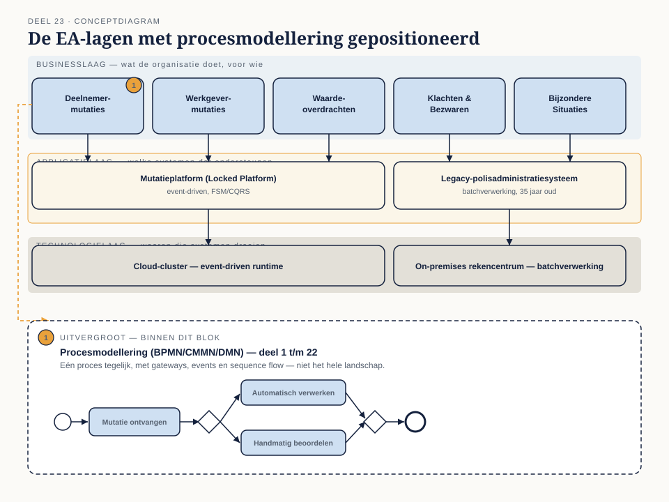
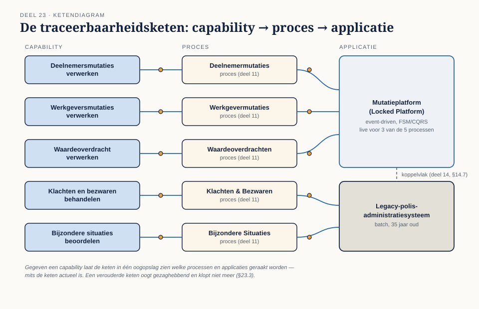
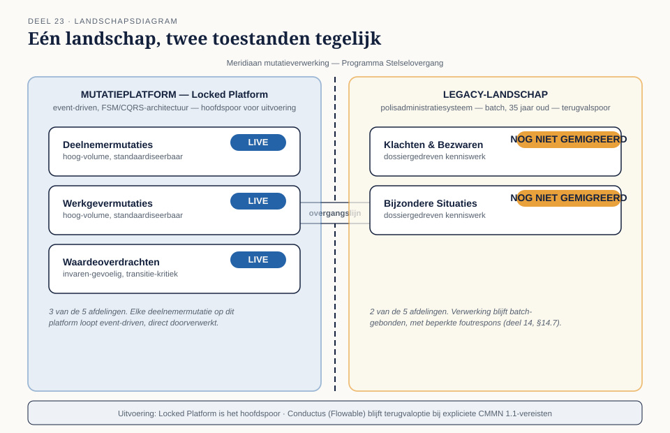

Deel 23 — Enterprise-procesarchitectuur
Slidedeck · Ductus-cursus BPMN, CMMN & DMN · niveau 3 · deel 23 van 30 · 24 slides
Slide 1 — Titelslide
Enterprise-procesarchitectuur — Deel 23
Beeldmerk, cursustitel, "Niveau 3 — Meesterschap"
Spreeknotitie: Welkom bij niveau 3. Andere schaal, andere kernvraag.
Slide 2 — Van programma naar onderneming
Programma Mutatieplatform → Programma Stelselovergang
Twee cirkels: klein (vijf afdelingen) en groot (hele onderneming plus keten)
Spreeknotitie: Verwijs naar casusdossier-stelselovergang.md — vanaf nu de bron voor alle wetgevingsgebonden feiten.
Slide 3 — Leerdoelen
Na dit deel kun je…
Vijf leerdoelen uit de reader
Spreeknotitie: Kort.
Slide 4 — EA in het kort
Business · applicatie · technologie

Figuur 23.1, leeg
Spreeknotitie: Zelfstandig behandeld, geen ArchiMate-ervaring vereist.
Slide 5 — Opdracht 1
Positioneer tien artefacten in de lagen
Werkboekverwijzing, timer 25 minuten
Spreeknotitie: Individueel.
Slide 6 — ArchiMate naast BPMN
Wat elke taal toont — en wat niet
 Figuur 23.2, hetzelfde proces in beide talen
Figuur 23.2, hetzelfde proces in beide talen
Spreeknotitie: Complementair, niet inwisselbaar.
Slide 7 — De prijs van vermengen
Alles naar ArchiMate, of alles naar BPMN
Twee mislukte pogingen naast elkaar
Spreeknotitie: Beide reflexen zijn herkenbaar — welke heb jij?
Slide 8 — Capability → proces → applicatie
De traceerbaarheidsketen

Figuur 23.3, leeg
Spreeknotitie: Wat het oplevert, en wat het kost om actueel te houden.
Slide 9 — Opdracht 2
ArchiMate of BPMN — acht situaties
Werkboekverwijzing, timer 20 minuten
Spreeknotitie: Individueel.
Slide 10 — Wanneer welke taal
Het keuzekader, één laag boven deel 8
Herhaling van niveau 1, deel 8, §8.1, nu op architectuurniveau
Spreeknotitie: Dezelfde vraag, hoger abstractieniveau.
Slide 11 — Opdracht 3
Bouw de traceerbaarheidsketen — de deliverable
Werkboekverwijzing, timer 40 minuten
Spreeknotitie: Individueel. Gaten expliciet benoemen is onderdeel van de opdracht, niet een tekortkoming.
Slide 12 — Impactanalyse: het legacy-systeem
35 jaar oud, batchverwerking — wat gebeurt er bij vervanging?
Herinnering aan deel 14, §14.7
Spreeknotitie: De aanleiding kan de stelselovergang zijn.
Slide 13 — Betrouwbaarheid van je antwoord
Hoog, gemiddeld, laag — afhankelijk van je keten
 Figuur 23.4, heatmap met betrouwbaarheidskleuren
Figuur 23.4, heatmap met betrouwbaarheidskleuren
Spreeknotitie: Een antwoord zonder onzekerheidsoordeel is geen antwoord.
Slide 14 — Opdracht 4
Impactanalyse legacy-vervanging — de kerndeliverable
Werkboekverwijzing, timer 45 minuten
Spreeknotitie: Individueel. Betrouwbaarheidsoordeel per bevinding is verplicht.
Slide 15 — Twee repositories
Synchroniseren — of een expliciete brug?
Twee ontwerpen naast elkaar
Spreeknotitie: Geen van beide is gratis.
Slide 16 — Opdracht 6
Ontwerp de repositorykoppeling
Werkboekverwijzing, timer 20 minuten
Spreeknotitie: Individueel.
Slide 17 — Het landschap in twee toestanden
Drie afdelingen nieuw, twee afdelingen oud

Figuur 23.5, leeg
Spreeknotitie: Geen twee modellen — één architectuur met een gemarkeerde overgangslijn.
Slide 18 — Tooling: Locked Platform en Conductus
Hoofdspoor en terugvaloptie
Twee kolommen: Locked Platform (event-driven, FSM/CQRS) · Conductus (Flowable, CMMN 1.1)
Spreeknotitie: Welk platform waar draait, is zelf onderdeel van wat je in kaart brengt.
Slide 19 — Opdracht 5
Modelleer het landschap in twee toestanden
Werkboekverwijzing, timer 35 minuten
Spreeknotitie: Tweetallen.
Slide 20 — Wie wint, wie verliest
Een eerlijk landschap kost meer werk dan een vereenvoudigd landschap
Weegschaal: architectinspanning versus stuurinformatie voor de directie
Spreeknotitie: Schijnzekerheid is de makkelijke weg — en de gevaarlijke.
Slide 21 — Opdracht 7
Stellingen
Vier stellingen uit het werkboek
Spreeknotitie: Plenair.
Slide 22 — Terugblik
Van tien artefacten tot een landschap in twee toestanden
De vijf paragrafen nogmaals kort
Spreeknotitie: Dit is de basis waarop deel 24 tot en met 30 voortbouwen.
Slide 23 — Vooruitblik
Deel 24 — Referentiemodellen en sectorstandaarden
Aankondiging: het lichtste deel van niveau 3
Spreeknotitie: Bewust na dit zware deel geplaatst.
Slide 24 — Vragen
Vragen over deel 23?
—
Spreeknotitie: Ruimte voor open vragen voordat het werkboek verder gaat.